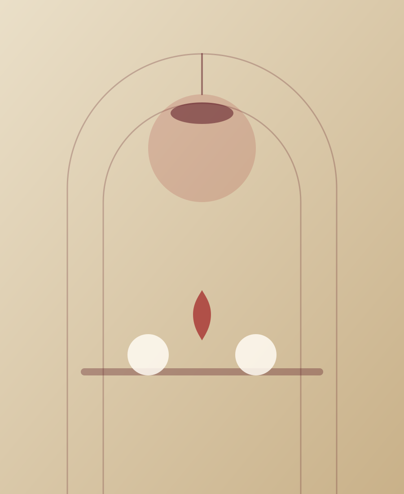
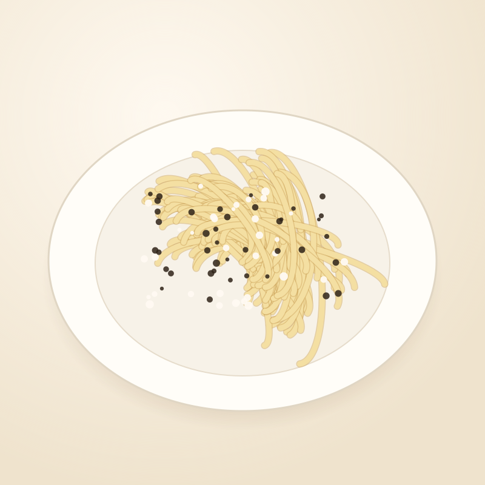
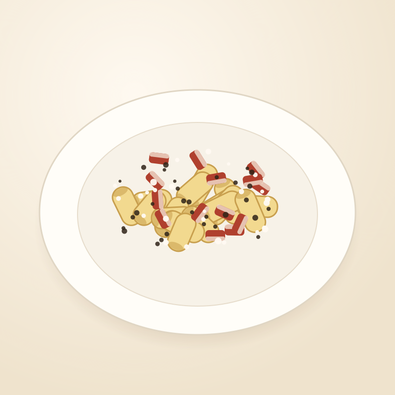
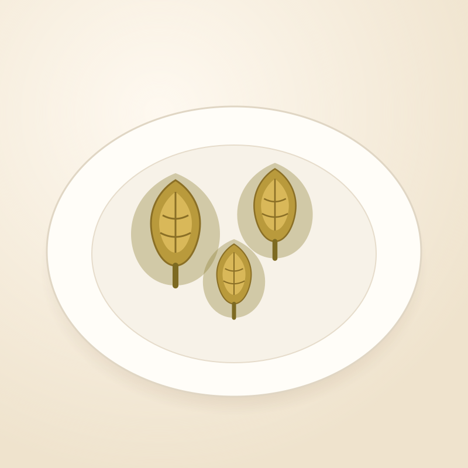
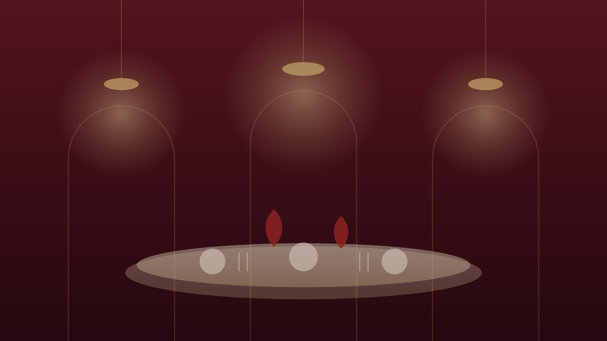
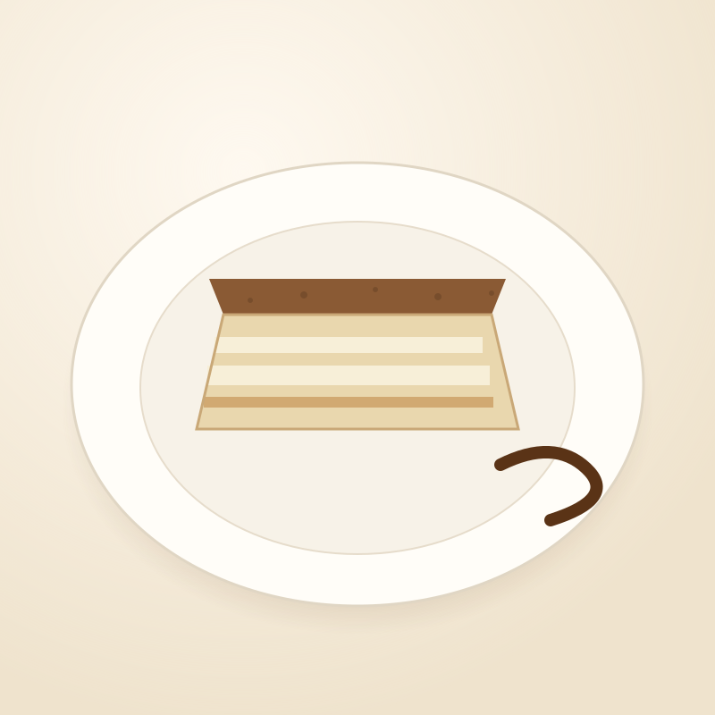

Il mercato, ogni mattina
Verdure e pesce arrivano da piazza Vittorio, la carne dalla campagna romana. Se un prodotto non ci convince, quel piatto quel giorno non c'è.
Via Principe Amedeo 126 · Roma
cucina romana di famiglia
Tre generazioni ai fornelli all'Esquilino. Pasta tirata a mano ogni mattina, carciofi scelti al mercato di piazza Vittorio, vini del Lazio e una sala che sa ancora di casa.
Nel 1962 Alfredo Sabatini apre sette tavoli in Via Principe Amedeo, a pochi passi dalla stazione Termini e dal mercato dell'Esquilino. Serviva quello che il quartiere sapeva riconoscere: pasta all'uovo, carne cotta piano, vino sfuso del Castelli.
Sessant'anni dopo la sala è la stessa — boiserie bordeaux, tovaglie color sabbia, luce bassa — ma la cucina si è fatta più precisa. Compriamo ogni giorno al mercato di piazza Vittorio, lavoriamo solo carni di filiera laziale e teniamo in carta una ventina di piatti, non uno di più.
Non cerchiamo la sorpresa: cerchiamo il piatto giusto, fatto come si deve, servito senza fretta.
Chiara & Marco Sabatini terza generazione

Verdure e pesce arrivano da piazza Vittorio, la carne dalla campagna romana. Se un prodotto non ci convince, quel piatto quel giorno non c'è.
Ottanta etichette scelte fra Cesanese, Frascati Superiore e piccoli produttori di Cori, con una selezione al calice che cambia ogni settimana.
Quarantadue coperti, nessun secondo turno forzato. Il tavolo prenotato resta suo per tutta la sera.

Pasta tirata al mattino, pecorino romano di Amatrice stagionato 8 mesi, pepe di Sarawak tostato al momento.
14 €
Guanciale di Amatrice croccante, tuorli di gallina livornese, pecorino e nessuna panna. Mai.
15 €
Cimaroli romaneschi aperti a fiore e fritti due volte, come si fa nel Ghetto. Da novembre ad aprile.
9 €«A tavola non ci si fa mai fretta: il tempo che ci mette un piatto è il tempo che merita.»



Scriva sul canale che preferisce: rispondiamo tutti i giorni fra le 10 e le 23. Per la stessa sera, meglio una telefonata.
Via Principe Amedeo 126 — 00185 Roma, rione Esquilino
a quattro minuti a piedi da Termini
Siamo sul lato dispari della strada, fra Via Gioberti e Via Cappellini: porta di legno, tende color sabbia, nessuna insegna luminosa.
Inquadri il codice con la fotocamera: il menu si apre sul telefono, sempre aggiornato.
ristorantealfredoroma.it/menuIl telefono si collega da solo, senza digitare niente. Rete aperta a tutti i tavoli.
rete Alfredo-Ospiti
Se si è trovato bene, il codice apre la nostra scheda già pronta con cinque stelle.
Tre gradi di differenza e la crema si spezza. La spiegazione, e come la evitiamo in cucina da sessant'anni.
LeggiCome scegliamo i carciofi romaneschi al mercato e perché la giudia vuole due fritture, non una.
LeggiPiazza Vittorio, il mercato coperto e i banchi dove facciamo la spesa ogni mattina: una piccola guida.
Leggi